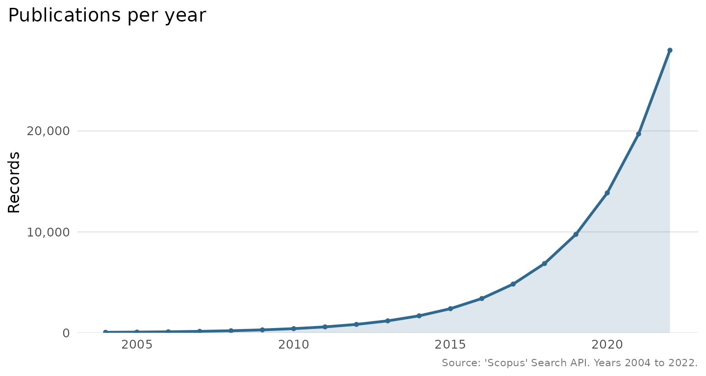

Analysing and visualising a literature
Source:vignettes/analysing-a-literature.Rmd
analysing-a-literature.RmdOnce a set of records is in hand, the package offers a small analysis
layer that turns it into the figures a bibliometric study usually needs.
The steps that contact the API are shown but not run; the rest use the
bundled example_records and run offline.
What is in a record set
scopus_top() tallies the most frequent sources or
authors. Author strings that hold several names are split, so each
contributor is counted once per record.
scopus_top(example_records, by = "source")
#> # A tibble: 5 × 2
#> value n
#> * <chr> <int>
#> 1 Nature 2
#> 2 Advanced Materials 1
#> 3 Nature Climate Change 1
#> 4 Physical Review Letters 1
#> 5 The Lancet Oncology 1
scopus_top(example_records, by = "author", n = 5)
#> # A tibble: 5 × 2
#> value n
#> * <chr> <int>
#> 1 Abbott B. 1
#> 2 Garcia M. 1
#> 3 Kumar S. 1
#> 4 Okafor N. 1
#> 5 Tanaka H. 1
plot_scopus_top(scopus_top(example_records, by = "source"))
A record set also has an honest default view: autoplot()
draws its records per year.
ggplot2::autoplot(example_records)
How a literature grows
scopus_trend() counts how many records match a query in
each year, which is the size of a literature over time. It issues one
count request per year, so it needs the API.
tr <- scopus_trend("graphene", years = 2004:2022, field = "TITLE-ABS-KEY")
plot_scopus_trend(tr)The result has a fixed shape, which we reproduce here to show the plot.
years <- 2004:2022
tr <- tibble::tibble(query = "TITLE-ABS-KEY(graphene)", year = years,
n = round(exp(seq(log(50), log(28000), length.out = length(years)))))
class(tr) <- c("scopus_trend", class(tr))
plot_scopus_trend(tr)
Reading the fuller record
The Search API returns a few fields per record. To read the abstract
and the fuller metadata for a record you already know,
scopus_abstract() calls the Abstract Retrieval API, by DOI
or ‘Scopus’ identifier. A batch is resilient: an identifier that cannot
be found yields a row of NAs with a warning rather than
stopping the run.
ab <- scopus_abstract(c("10.1038/s41586-019-0001-1", "10.1103/PhysRevLett.116.061102"))
ab[, c("doi", "title", "year")]
substr(ab$abstract[1], 1, 200)Beyond five thousand records
A single Search API query returns at most its first 5000 records
under the ordinary offset paging. When you need the whole of a larger
result set in one pass, scopus_fetch(cursor = TRUE) follows
the API’s cursor instead, which has no such ceiling.
recs <- scopus_fetch("TITLE-ABS-KEY(microplastics)", cursor = TRUE)
nrow(recs)The records then arrive in the API’s deep-paging order rather than sorted by relevance, which is the right trade for a complete harvest.